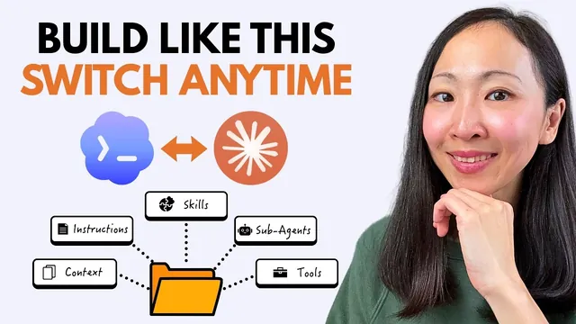

Codex든 Claude Code든 돌아가는 AI 마케팅 시스템 만들기

원본 영상 보기 →
- 에이전트는 모델이 아니라 하네스가 결정해요
- 세 바구니로 나누면 옮기는 일이 작아져요
- 맥락은 한 번만 써 두면 계속 재사용돼요
한 줄 요약
Grace Leung은 마케팅 에이전트를 AI 서비스 하나에 묶어 두지 말고 어디로든 들고 갈 수 있는 작업 폴더로 만들라고 말해요. 폴더를 다섯 부품으로 나눠 두면 Claude Code에서 Codex로 옮길 때 새로 만들 게 거의 없어요. 영상은 그 과정을 화면으로 끝까지 보여 줍니다.
전체 내용 정리
최고의 모델을 고르는 일보다 갈아타도 안 무너지는 구조가 먼저예요
Grace는 요즘 최상위 모델끼리 성능 차이가 점점 작아지고 있다고 봐요. 이번 주엔 Claude가 제일 낫다 싶다가도 다음 주엔 ChatGPT가 치고 올라오고 그 뒤에 Google이 새 걸 들고 나오죠. 가격은 오르고 사용 제한은 빡빡해지는데 한 곳에 계속 머물기는 점점 어려워진다는 얘기예요.
그래서 Grace는 질문을 바꿔요. "어느 모델이 최고냐"가 아니라 "어느 모델에도 묶이지 않도록 에이전트 스택을 어떻게 짜느냐"를 묻자는 거예요. 마침 이번 주에 Grace의 커뮤니티 멤버가 똑같은 질문을 했다고 해요. 영상은 그 답으로 이식 가능한(portable) 마케팅 에이전트 작업 공간을 하나 만들어 Claude Code와 Codex 양쪽에서 돌려 보는 내용입니다.
먼저 에이전트가 뭔지부터 정리해요. Grace는 NVIDIA CEO Jensen Huang의 설명을 가져와요. 챗봇과 에이전트를 가르는 건 루프라는 거죠. 행동하고 결과를 확인하고 일이 끝날 때까지 계속 가는 구조예요.
여기서 Grace는 모델과 하네스(harness, 모델을 감싸는 작업 환경)를 나눠서 봅니다. 모델은 마케팅 작업을 얼마나 잘하느냐, 즉 지능을 정해요. 하네스는 브랜드 톤을 알고 캠페인 데이터에 접근할 수 있는 "내 에이전트"로 만들어 주는 쪽이에요. Claude 모델을 ChatGPT 모델로 바꾸면 마케팅 실력은 달라질 수 있어도 나를 나답게 만드는 부분은 그대로 남아요. 그게 하네스입니다.
에이전트가 도는 방식은 크게 두 가지예요. 하나는 클라우드 에이전트인데 Claude Managed Agent, Google의 Gemini Spark, Google Enterprise Agent Platform, Perplexity Computer, Manus 같은 것들이에요. 회사 클라우드 서버에서 돌기 때문에 내 컴퓨터의 파일에는 기본적으로 접근하지 못해요.
다른 하나는 로컬 에이전트예요. Claude Code, Cowork, Codex, Hermes, OpenClaw처럼 내 컴퓨터나 회사 서버에서 돌고 파일과 폴더를 직접 읽게 해 줄 수 있어요. Grace는 대부분의 사람이 이쪽을 쓴다고 보고 영상에서는 Claude Code와 Codex만 다룹니다. 원리는 다른 플랫폼에도 그대로 통한다고 해요.
작업 폴더 하나에 부품이 다섯 개 들어 있어요
Grace가 말하는 하네스를 가장 단순하게 풀면 프로젝트 작업 폴더 하나예요. 안에는 핵심 부품이 다섯 개 들어가고 이 폴더째로 Claude Code든 Codex든 Antigravity든 들고 가면 됩니다.
- 지식과 맥락(knowledge and context): 메모리를 포함해서 에이전트가 나와 내 브랜드에 대해 아는 내용이에요.
- 지침 또는 설정 파일(instructions): 이 작업 공간에서 에이전트가 어떻게 행동할지, 어떤 규칙과 사양을 따를지 적어 둡니다.
- 에이전트 스킬(agent skills): 에이전트가 불러서 실행할 수 있는 작업 흐름이에요.
- 전문 서브에이전트(sub-agents): 역할이 정해진 에이전트 정의서를 하네스 안에 저장해 두고 필요할 때 부릅니다.
- 도구(tools): 마케팅 분석 도구나 CRM 데이터처럼 실제 시스템에 닿게 해 주는 연결이에요.
이렇게 나눠 보면 옮기는 문제가 단순해져요. "전부 다시 만들어야 하나" 하고 막막해할 필요 없이 "이 부품은 그냥 가져가도 되나"만 따지면 되거든요. Grace는 부품을 세 바구니로 묶습니다.
첫 번째 바구니는 완전히 이식 가능한 것들이에요. 맥락과 지식은 결국 문서, 에셋 같은 평범한 파일이라서 어디서든 그대로 쓸 수 있어요. 두 번째는 약간의 번역이 필요한 것들이고 지침, 스킬, 서브에이전트가 여기 들어갑니다. 내용은 같은데 플랫폼마다 포장 방식이 조금씩 달라요. 세 번째는 직접 옮겨지지 않는 도구예요. 플랫폼을 넘어갈 때 다시 연결해야 할 수 있어요.
팀이든 혼자든 같은 틀로 짜면 돼요
Grace는 폴더를 어떻게 나누면 좋을지 세 가지 상황을 예로 들어요.
- 브랜드 하나를 맡은 마케팅 팀: 공유 맥락 폴더 하나를 두고 에이전트가 같은 브랜드 정보를 보게 해요. 유료 채널, 콘텐츠, 이메일, SEO 같은 채널별로 프로젝트 폴더를 따로 만들고 서브에이전트, 스킬, 지침은 팀 전체가 공유합니다.
- SEO 같은 기능 팀: 구조는 똑같은데 전부 한 가지 일로 좁혀지고 채널 대신 SEO 작업 유형별로 나눠요. 넓어지는 게 아니라 깊어지는 쪽이에요.
- 고객 여럿을 맡은 1인 컨설턴트: 한 작업 공간에 고객을 전부 넣고 고객마다 자기 맥락 폴더를 둡니다. 스킬과 에이전트는 맨 위에 두고 같이 쓰고요. 어떤 고객만 따로 맥락이나 스킬이 필요하면 그 고객 폴더 안에 넣어요.
Grace의 표현으로는 기본값을 물려받고 다른 것만 덧붙이는 구조예요. 이렇게 보면 설정을 여러 벌 만드는 게 아니라 어디든 들고 갈 한 벌을 만드는 셈입니다.
Claude Code에서 첫 마케팅 에이전트를 만들어요
시연은 로컬 컴퓨터에 marketing 폴더를 만드는 데서 시작해요. 안에는 방금 설명한 구조대로 하위 폴더를 둡니다.
- core context 폴더: 브랜드의 핵심 정보, 예를 들어 제품과 서비스 목록이 들어가요. Grace가 쓴 건 예시 파일입니다.
- 마케팅 폴더들: 위에서 말한 이식 가능한 요소들이에요.
- MCP 연결 파일: 외부 도구와 연결하는 설정이에요. MCP(AI가 외부 도구와 데이터에 접근하게 해 주는 연결 규격)에서 쓰는 파일입니다.
- CLAUDE.md: 이 작업 공간의 프로젝트 지침 파일이에요.
이 세 가지가 갖춰지면 에이전트 스킬을 설치해요. 순서는 이래요.
- 프로젝트 안에
.claude폴더를 만듭니다. Claude Code가 공식으로 쓰는 구조예요. - 그 아래에
skills폴더를 하나 더 만들어요. 스킬이 전부 여기 들어갑니다. - 쓸 스킬을 구해서 압축을 풀고 스킬 폴더들을 이 프로젝트에 끌어다 놓아요. 어떤 스킬을 써야 할지 모르겠다면 Grace는 영상 설명란에 올린 스킬 묶음을 받아서 쓰라고 해요.
- 설치가 끝나면 슬래시 명령어(/)로 스킬을 바로 불러 쓸 수 있어요.
다음은 첫 에이전트예요. Claude에게 데이터 분석가 에이전트를 만들어 달라고 요청하는데 조건은 세 가지입니다. 마케팅 성과 데이터를 인사이트로 바꿔 주는 역할이에요. 방금 설치한 데이터 시각화 스킬을 쓰고 메모리를 켜 두라는 거예요. 금방 만들어지고 프로젝트에 agent 폴더가 새로 생기면서 data analyst 에이전트 파일이 들어가요. 이 파일에 에이전트의 역할, 행동 방식, 작업 흐름 같은 정의가 적혀 있습니다.
바로 일을 시켜 봐요. 질문은 "최근 2주간 웹사이트의 SEO 성과가 어때?"입니다. 에이전트는 MCP로 미리 연결해 둔 Google Search Console에서 데이터를 가져오고 스킬을 불러 데이터 시각화를 만들어 SEO 폴더에 저장해요. 그다음 브랜드에 맞는지 검증까지 합니다. brand designer 스킬을 켜 둔 덕에 결과물이 전부 브랜드 스타일로 나와요.
결과는 차트와 그래프로 구성된 데이터 스토리예요. 성과가 좋은 곳과 앞으로 개선할 곳을 짚어 주고 이어서 추가 질문도 계속 할 수 있어요. 같은 방법으로 팀에 필요한 다른 마케팅 에이전트를 계속 늘려 가면 됩니다.
같은 폴더를 Codex로 가져가면 설정이 알아서 옮겨져요
이제 이 스택을 Codex로 옮길 차례예요. 먼저 Codex가 어떤 도구인지 짚으면 OpenAI의 Codex도 Claude Cowork처럼 로컬 데스크톱 에이전트예요. 직접 만든 에이전트와 스킬로 실제 작업을 시킬 수 있고 외부 도구나 스킬은 플러그인으로 연결합니다.
과정은 이래요. Codex의 프로젝트 화면에서 Claude에서 쓰던 같은 프로젝트 폴더를 불러옵니다. Claude Code에서 가져오는 게 처음이면 Codex가 Claude 생태계의 쓸 만한 설정을 자동으로 찾아내서 매핑까지 도와줘요. 계속(continue)을 누르고 한 번 더 클릭하면 같은 프로젝트가 들어옵니다.
폴더 구조를 보면 달라진 점이 보여요. .agents 폴더, Codex가 쓰는 .codex 폴더와 설정 파일, 그리고 기본 지침 파일인 AGENTS.md가 새로 생겼어요. 변환을 Codex가 알아서 해 준 거예요. 스킬 패널을 열어 보면 에이전트 스킬도 전부 Codex 쪽으로 옮겨져 있습니다.
마지막으로 Google Search Console 같은 MCP 도구 연결을 다시 확인해요. 끊긴 게 있으면 이때 다시 연결하면 됩니다. 앞에서 도구가 세 번째 바구니였던 이유가 이거예요.
Codex에서 이어서 작업하는 모습도 보여 줘요. 새 스킬로 landing page audit(랜딩 페이지 점검)을 설치하고 싶다면 스킬을 업로드해서 이 프로젝트에 설치해 달라고 Codex에게 말하면 끝이에요. Codex는 스킬을 기본으로 보관하는 .agents 폴더에 넣어 줍니다.
두 번째 에이전트도 만들어요. 역할은 growth specialist(그로스 담당)고 쓸 스킬을 정해 주고 메모리를 켜라고 요청해요. Codex가 금방 만들어 주고 이 에이전트의 파일은 .codex 폴더에 생깁니다.
일을 시키는 방법은 Claude Code와 거의 같아요. growth specialist 에이전트를 태그해서 웹사이트 홈페이지를 브라우저로 열고 전체 점검을 해서 분석까지 뽑아 달라고 요청합니다. 에이전트는 가져온 맥락을 같은 방식으로 읽고 Codex가 브라우저를 직접 조작해요. Grace가 테스트해 보니 Codex는 브라우저 조작이 훨씬 빠르고 정확했다고 해요.
스크린샷을 찍고 해상도를 바꿔 가며 여러 기기에서 UX가 괜찮은지 보는 점이 Grace 마음에 든 부분이에요. 결과물은 스킬을 써서 만든 Word 문서 형식의 점검 보고서입니다. 세부 발견 사항, 고치는 방법, 핵심 액션 목록이 들어 있어요. 재사용 가능한 스킬이니까 다른 주요 마케팅 페이지도 점검시키거나 한꺼번에 돌릴 수 있어요.
이식 스킬로 되돌아가도 에이전트는 그대로 일해요
이렇게 다른 플랫폼에서 새로 만든 걸 가지고 다시 Claude로 돌아가고 싶을 때가 있죠. 어떤 기능이 마음에 들어서 오가는 경우도 많아요. 그래서 양방향 동기화가 필요하다고 Grace는 말해요. 앞서 보여 준 매핑 지도를 보고 직접 옮겨도 되지만 매번 손이 많이 가니까 Grace는 Claude Code와 Codex 사이를 변환해 주는 agent migration 스킬을 따로 만들었다고 해요. 스킬은 영상 설명란에서 받을 수 있어요.
설치 방법은 이래요.
- 받은 migration 스킬을 Claude Code와 Codex 양쪽에 설치합니다.
- 설치 위치는 사용자 계정 수준(user account level)을 권해요. 그래야 다른 프로젝트에서도 같은 스킬을 쓸 수 있어요.
- 전체 과정은 2분이 안 걸려요.
- 스킬 패널에서 제대로 설치됐는지 확인해요.
Claude Code로 돌아가는 과정은 이래요. 이 스킬을 불러서 "이 작업 공간을 대상 플랫폼인 Claude Code로 옮길 준비를 해 줘"라고 시켜요. 스킬이 프로젝트 전체를 먼저 스캔하고 마이그레이션 계획을 내놓습니다. 이번 예시에서는 새로 생긴 스킬과 에이전트를 Claude 생태계에서 쓰도록 번역해야 한다는 걸 알아냈어요.
계획을 검토해서 승인하면 백업 여부도 물어봐요. Grace는 파일을 바꾸기 전에 에이전트 작업 공간을 꼭 백업해 두라고 권합니다. 안전을 위해서래요. 이후 핵심 구성 요소가 새 스킬과 함께 동기화돼요. 새로 만든 에이전트는 Claude 폴더로, 설정 파일들도 같이 돌아와요.
한계도 하나 알려 줘요. 이 스킬은 아직 에이전트 메모리 파일의 동기화는 다루지 않는다고 해요. 가능은 해서 더 나가고 싶다면 두 플랫폼이 모두 접근할 수 있는 단일 원본(single source of truth) 한 곳을 가리키도록 에이전트 메모리 파일을 설정하고 거기서 동기화하면 된다고 합니다.
옮긴 뒤에는 같은 작업 공간을 Claude Code에서 다시 열어요. Codex에서 만든 growth specialist 에이전트를 그대로 쓰고 Codex가 만든 점검 보고서까지 읽게 합니다. 이번 요청은 이 보고서를 바탕으로 새 웹사이트 홈페이지를 다시 디자인해 달라는 거예요.
Claude는 같은 에이전트와 스킬을 불러와 매끄럽게 일하고 결과를 같은 폴더에 저장해요. 새 홈페이지에는 branded design 스킬과 로고가 쓰였고 점검에서 나온 발견 사항에 맞춰 메시지가 최적화됐어요. Grace는 이게 작업 공간에 쌓아 둔 맥락과 지식의 힘이라고 말해요. 플랫폼을 옮겨도 브랜드, 제품 구성, 타깃, 가치 제안, 브랜드 스타일을 다시 설명할 필요가 없어서 결과가 매번 일관됩니다.
그래서 Grace의 결론은 모델의 지능에 너무 신경 쓰지 말고 에이전트 시스템의 기반을 잘 깔아 두라는 거예요. 기반이 있으면 시간이 지나며 복리로 쌓이고 Codex나 다른 플랫폼으로도 같은 스킬과 에이전트를 가져가 쓸 수 있어요. 어디에도 묶이지 않고 필요할 때 갈아탈 수 있다는 뜻입니다.
핵심 인사이트
- 에이전트는 모델이 아니라 하네스가 결정해요: Grace는 모델이 지능을 맡고 하네스가 "내 에이전트"로 만든다고 설명해요. 모델은 갈아끼울 수 있으니 투자는 맥락, 지침, 스킬 쪽에 하는 게 오래 남습니다.
- 세 바구니로 나누면 옮기는 일이 작아져요: 맥락은 그냥 가져가요. 지침과 스킬과 서브에이전트는 이름과 폴더만 번역하고 도구는 다시 연결해요. 전체 재구축이 아니라 부분 작업으로 줄어듭니다.
- 맥락은 한 번만 써 두면 계속 재사용돼요: 브랜드, 제품, 타깃, 가치 제안, 스타일이 폴더에 있으면 플랫폼을 옮겨도 다시 설명할 필요가 없어요. 결과물의 일관성도 거기서 나옵니다.
- 고객이나 채널이 여러 개여도 같은 구조예요: 공유 요소는 위에, 다른 부분만 하위 폴더에 두면 되고 팀, 기능 팀, 1인 컨설턴트 모두 이 틀로 짤 수 있어요.
오늘 당장 해볼 것
- 컴퓨터에 marketing 폴더를 만들고 그 안에 core context 폴더를 둔 뒤 브랜드와 제품 설명 파일을 넣어 보세요. 이 폴더가 어느 AI로 옮겨도 그대로 쓰이는 첫 번째 바구니라서 가장 먼저 만들어 두면 이득이 커요.
- 같은 폴더에 CLAUDE.md로 프로젝트 지침을 쓰고
.claude/skills폴더를 만들어 보세요. 직접 쓰던 작업 방식을 스킬 폴더로 하나씩 옮겨 두면 슬래시 명령어로 바로 불러 쓸 수 있습니다. - Claude Code에서 "마케팅 성과 데이터를 인사이트로 바꿔 주고 데이터 시각화 스킬을 쓰며 메모리를 켠 data analyst 에이전트를 만들어 줘"라고 요청해 보세요. 에이전트 파일이 agent 폴더에 생기는지 확인하세요. Google Search Console을 MCP로 연결해 두었다면 "최근 2주 SEO 성과가 어때?"까지 물어보세요.
- Codex에서 같은 폴더를 프로젝트로 불러와 보세요. 자동 매핑 안내가 뜨면 계속을 눌러 가져오세요. 스킬 패널에 스킬이 다 보이는지와 MCP 도구 연결이 끊기지 않았는지를 확인하면 이식이 잘 됐는지 바로 알 수 있어요.
- 플랫폼 사이를 오갈 일이 생기면 파일을 바꾸기 전에 작업 공간을 먼저 백업하세요. 변환이 꼬이더라도 처음 상태로 돌아갈 수 있어서 마음이 편합니다.